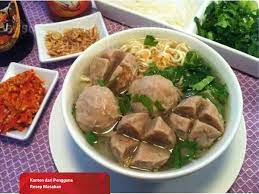
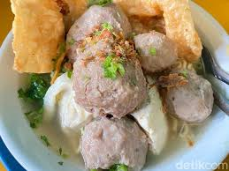

Apa itu Bakso?
Bakso atau baso adalah jenis bola daging yang lazim ditemukan pada masakan Indonesia. Bakso umumnya dibuat dari campuran daging sapi giling dan tepung tapioka, tetapi ada juga bakso yang terbuat dari daging ayam, ikan, atau udang bahkan daging kerbau. Dalam penyajiannya, bakso umumnya disajikan panas-panas dengan kuah kaldu sapi bening, dicampur mi, bihun, taoge, tahu, terkadang telur lalu ditaburi bawang goreng dan seledri. Bakso sangat populer dan dapat ditemukan di seluruh Indonesia, dari gerobak pedagang kaki lima hingga restoran besar. Berbagai jenis bakso sekarang banyak ditawarkan dalam bentuk makanan beku yang dijual di pasar swalayan ataupun mal-mal. Irisan bakso dapat juga dijadikan pelengkap jenis makanan lain seperti mi goreng, nasi goreng, sop atau capcai.
Asal mula
Bakso memiliki akar dari seni kuliner Tionghoa-Indonesia. Hal ini ditunjukkan dari istilah "Bakso" berasal dari kata Bak-So, dalam Bahasa Hokkien yang secara harfiah berarti "daging giling". Karena kebanyakan penduduk Indonesia adalah muslim, maka bakso lebih umum terbuat dari daging halal seperti daging sapi, ikan, atau ayam. Kini kebanyakan penjual bakso adalah orang Jawa dari Wonogiri dan Malang. Tempat yang terkenal sebagai pusat bakso adalah Solo dan Malang yang disebut Bakso Malang. Bakso Malang dan bakso Solo adalah masakan bakso dan disajikan dengan khas Jawa. Bakso berasal dari Tiongkok tetapi berbeda dengan bakso Malang dan Solo. Bakso Tiongkok biasanya terbuat dari babi atau makanan laut dan warnanya agak kecokelatan serta bentuknya tidak bulat sekali. Sedangkan bakso Malang dan Solo terbuat dari daging sapi, berwarna abu-abu dan bentuknya bulat sekali. Bakso Tiongkok biasanya tidak disajikan dengan kuah melimpah berbeda dengan bakso Malang dan Solo yang disajikan dengan kuah melimpah.
Bakso Solo merupakan usaha turun-temurun dari Bakso Wonogiri, karena banyak anak cucu yang menetap dan membuka usaha bakso di Kota Solo dan sekitarnya, terutama daerah perkotaan yang letaknya begitu strategis di pinggir jalan raya.